Gr치ficos
J치 aprendemos muito sobre a 딶ram치tica de manipula칞칚o de dados para produzir tibbles/tabelas conforme os requisitos da nossa an치lise. Existe uma gram치tica diferente, mas conectada, que usamos para produzir um gr치fico. Note que, em contraste com outras formas de produzir gr치ficos, n칚o desenhamos os elementos m칚o ou individualmente - para produzir gr치ficos atrav칠s de programa칞칚o, temos que definir todos os elementos do gr치fico baseado nas vari치veis em nosso tibble.
Existe uma forte liga칞칚o entre a gram치tica de manipula칞칚o de dados e a gram치tica de visualiza칞칚o: toda a informa칞칚o para o nosso gr치fico vem de um tibble. Cada linha em nosso tibble 칠 uma 땃nidade a ser exibida no gr치fico, e cada coluna em nosso tibble 칠 uma vari치vel que determina um aspecto visual espec칤fico do gr치fico, incluindo posi칞칚o, cor, tamanho e forma. Por isso, apenas podemos pensar em produzir um gr치fico depois de organizar e transformar os nossos dados para um tibble de formato apropriado para a visualiza칞칚o.
Neste tutorial vamos apresentar a estrutura do c칩digo para produzir gr치ficos a partir de alguns exemplos simples e propositalmente n칚o cobriremos todas as (in칰meras) possibilidades de visualiza칞칚o.
Antes de mais nada, temos que lembrar a classifica칞칚o de tipos de dado, porque isso 칠 crucial para determinar quais gr치ficos podemos produzir:
| Tipo em R | Atalho em tibble | ||
|---|---|---|---|
| Discreta | Nominal | Factor ou Character | fctr, chr |
| Ordinal | Ordered Factor | fctr, chr | |
| Inteiro | Integer | int | |
| Cont칤nua | Double/Numeric/Real | dbl |
Vamos distinguir principalmente entre vari치veis discretas e vari치veis cont칤nuas. As discretas t칡m que ser mapeadas para elementos gr치ficos independentes - colunas, ou histogramas, formas e cores distintas - e as cont칤nuas t칡m que ser mapeadas para elementos gr치ficos que variam gradualmente - densidades, tamanho e escalas de cores.
A Gram치tica de Gr치ficos
O nosso pacote de gr치ficos j치 foi aberto dentro de tidyverse, e se chama ggplot (딶g para gram치tica de gr치ficos). A sintaxe de ggplot 칠 nova e diferente, mas se integra perfeitamente ao nosso fluxo de trabalho, seguindo a nossa prepara칞칚o de dados depois de mais um pipe. A conex칚o com elemento do gr치fico se d치 com o sinal positivo (+). 칄 mais f치cil mostrar com um exemplo:
Parab칠ns, voc칡 acabou de produzir o seu primeiro gr치fico! O que voc칡 acha? N칚o 칠 o mais bonito, mas 칠 impressionante para um c칩digo de tr칡s linhas curtas. Mas provavelmente o c칩digo acima permanece um mist칠rio. Vamos desagregar os componentes:
Come칞amos - como sempre - com o nosso banco de dados (tibble) relevante. Seguimos com qualquer transforma칞칚o de dados desejada, aqui um filtro para o destino de Denver (DEN). O 칰ltimo pipe passa o tibble resultante (apenas os voos para Denver) para o meio-ambiente de gr치ficos, o ggplot() (sem argumento). ggplot() 칠 uma fun칞칚o que inicia um gr치fico, mas na verdade n칚o coloca nenhum conte칰do nele.
Agora, uma observa칞칚o importante: os nossos gr치ficos s칚o compostos por v치rias 딲amadas, que podemos juntar em linhas separadas. Adicionamos as camadas com o s칤mbolo + em vez de um pipe (%>%). 칄 f치cil esquecer a diferen칞a, mas 칠 importante: um pipe (%>%) passa os dados para transforma칞칚o e o + adiciona mais informa칞칚o, mais camadas.
Para entender a 칰ltima linha de geom_point() temos que discutir dois componentes cruciais: Est칠ticas - mapeamentos de vari치veis para elementos do gr치fico - e Geometrias - o estilo visual do gr치fico.
Est칠ticas
Existem centenas de elementos do nosso gr치fico que podemos personalizar. Em breve vamos ver como customizar os t칤tulos, os eixos, o fundo, a legenda etc. Agora, vamos focar nos elementos visuais de cada camada (cada geometria) de dados. H치 v치rias op칞칫es, a disponibilidade delas depende de qual geometria estamos usando, mas 칠 bom resumir as op칞칫es mais comuns:
| Est칠tica | Descri칞칚o |
|---|---|
| x | Posi칞칚o em rela칞칚o a eixo x |
| y | Posi칞칚o em rela칞칚o a eixo y |
| colour | Cor de ponto/linha/contorno de pol칤gono |
| fill | Cor de dentro de 치rea/barra |
| alpha | Transpar칡ncia |
| shape | Forma da observa칞칚o |
| size | Tamanho da observa칞칚o |
| linetype | Se a linha estiver preenchida, pontilhada ou tracejada |
| label | Texto |
Est칠ticas podem ser ligadas com as vari치veis do nosso banco de dados. Por exemplo, se quisermos mostrar um ponto para cada voo, pode ser que o x reflete a hora de partida (a vari치vel dep_time), o y reflete o atraso (dep_delay), o shape reflete o aeroporto de partida (origin), o size reflete a dist칙ncia de viagem (distance), e o colour reflete a companhia a칠rea (carrier).
H치 duas op칞칫es para especificar as est칠ticas de uma camada, dependendo se queremos que as est칠ticas variem conforme com os nossos dados, ou sejam fixas e constantes para todas as observa칞칫es.
- Para est칠ticas que variam com os nossos dados (ex. a cor depende da companhia a칠rea), definimos a est칠tica com uma vari치vel, e dentro da fun칞칚o
aes().
... geom_point(aes(x=dep_time, y=dep_delay, shape=origin, size=distance, colour=carrier))- Para est칠ticas que n칚o variam com os nossos dados (ex. o tamanho 칠 fixo), definimos a est칠tica com um valor 칰nico (uma constante) em vez de uma vari치vel, e fora da fun칞칚o
aes().
... geom_point(size=10, alpha=0.7)Claro que podemos combinar as duas formas:
... geom_point(aes(x=dep_time, y=dep_delay), size=1)Geometrias
A parte mais dif칤cil de preparar um gr치fico 칠 escolher a geometria apropriada. Claro que isto tem a ver com o estilo de gr치fico que queremos, mas tamb칠m depende do n칰mero e os tipos de vari치veis que queremos apresentar. Todas as geometrias come칞am com geom_, e as op칞칫es mais comuns s칚o as seguintes (lembrando que existem possibilidades infinitas):
| Geom | Vari치veis para Visualizar | Est칠ticas comuns | Exemplo |
|---|---|---|---|
| geom_bar | Uma vari치vel discreta (o n칰mero de observa칞칫es por grupo) | x | 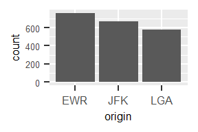 |
| geom_histogram | Uma vari치vel cont칤nua | x | |
| geom_density | Uma vari치vel cont칤nua | x | 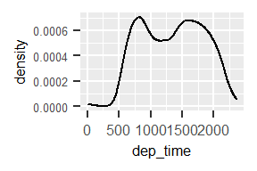 |
| geom_point | Duas vari치veis cont칤nuas | x, y | |
| geom_histogram | Uma vari치vel cont칤nua, e uma discreta | x, fill | 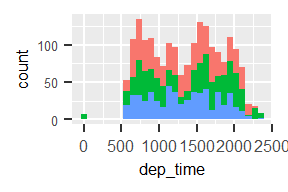 |
| geom_density | Uma vari치vel cont칤nua, e uma discreta | x, colour | |
| geom_boxplot | Uma vari치vel cont칤nua, e uma discreta | x, y | |
| geom_col | Uma vari치vel cont칤nua, e uma discreta | x, y | |
| geom_line | Uma vari치vel cont칤nua, e uma discreta ordenada | x, y, group | |
| geom_point | Duas vari치veis cont칤nuas e uma discreta | x, y, colour/shape/size | 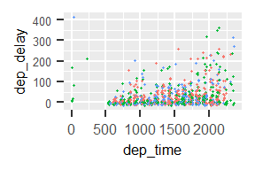 |
Geometria para uma vari치vel discreta (o n칰mero de observa칞칫es por grupo)
Vamos come칞ar com o gr치fico mais simples. Os nossos dados s칚o divididos em grupos por uma vari치vel discreta e queremos conhecer o n칰mero de observa칞칫es (linhas) em cada grupo. Veja como apresentar essa informa칞칚o em ggplot para o banco de dados de flights por origin:
Vamos olhar cada uma de suas partes.
Comecemos pela primeira linha. A principal fun칞칚o do c칩digo 칠, como era de se esperar, o nosso tibble, seguido por ggplot(). Note que n칚o estamos fazendo uma atribui칞칚o, por enquanto, pois queremos apenas 랄mprimir o gr치fico, e n칚o guard치-lo como objeto (algo perfeitamente poss칤vel!). ggplot() 칠 uma fun칞칚o que inicia um gr치fico, mas na verdade n칚o coloca nenhum conte칰do nele.
Agora, para adicionar uma geometria, colocamos um s칤mbolo de + ap칩s fechar o par칡nteses da fun칞칚o ggplot e, convencionalmente na linha seguinte, utilizamos a fun칞칚o da geometria correspondente. Cada + nos permite adicionar mais uma camada em nosso gr치fico. Mas qual camada? N칩s definimos uma camada principalmente por sua geometria - o tipo de representa칞칚o visual dos nossos dados que queremos. geom_bar indica que queremos uma geometria de barras, como um 딱ar chart em excel.
A escolha da geometria depende do tipo de dados que voc칡 deseja visualizar de seu tibble. Aqui, analisamos os dados por origem, que 칠 uma vari치vel discreta com tr칡s valores (character ou factor), ent칚o usamos uma geometria que corresponda com dados discretos. Quando n칚o queremos cruzar esta vari치vel discreta com nenhuma outra vari치vel, a 칰nica coisa que pode ser feito 칠 contar e comparar o n칰mero de observa칞칫es (voos) em cada grupo (origem).
A l칩gica de um gr치fico de barras 칠 representar a contagem de frequ칡ncia de cada categoria discreta, ent칚o faz sentido usar a geometria geom_bar. Vamos ver exemplos de outras geometrias que correspondam a outros dados abaixo.
Na linha de c칩digo da geometria, as 3 letrinhas 라es causam estranheza. 라es 칠 a abrevia칞칚o de 라esthetics. Aqui definiremos quais vari치veis de nosso tibble far칚o parte do gr치fico. Estamos trabalhando por enquanto com apenas uma vari치vel, e cada grupo ser치 representado separadamente ao longo do eixo horizontal, ou eixo 랒. Por esta raz칚o preenchemos o par칙metro 랒 da 라esthetics e nada mais.
Habilidade B치sica de Programa칞칚o: Apresentando Gr치ficos no relat칩rio final
Antes de mais nada, vamos ver como encaminhar os nossos gr치ficos para o relat칩rio final (HTML, DOC ou PDF). Isto 칠 a parte f치cil. Deixamos o nosso gr치fico em um chunk (sem salvar como objeto) e ele ser치 inserido no relat칩rio final na mesma localiza칞칚o, antes e depois de qualquer texto simples.
```{r}
flights %>% ggplot() +
geom_bar(aes(x=origin))
```Se preferir, voc칡 pode salvar o seu gr치fico como objeto, e depois digitar o nome do objeto em um chunk sozinho para gerar o mesmo efeito.
```{r}
grafico <- flights %>% ggplot() +
geom_bar(aes(x=origin))
``````{r}
grafico
```Existem algumas op칞칫es de chunk que podemos usar para controlar a apresenta칞칚o dos gr치ficos. Os mais importantes s칚o fig.height e fig.width que nos permitem especificar o tamanho do gr치fico final, em unidades de inches.
```{r, fig.height=2, fig.width=2}
flights %>% ggplot() +
geom_bar(aes(x=origin))
```Gr치ficos com uma vari치vel cont칤nua - Gr치ficos de histogramas
Vamos trocar rapidamente para gr치ficos de uma vari치vel cont칤nua, como a velocidade, alterando o valor de 랒 dentro de aes(). (N칚o temos vari치veis verdadeiramente cont칤nuas no banco de flights - mesmo os hor치rios s칚o vari치veis discretas por minuto, ent칚o vamos calcular velocidade no fluxo de processamento).
flights <- flights %>%
mutate(velocidade=distance/air_time)
flights %>%
ggplot() +
geom_bar(aes(x=velocidade))
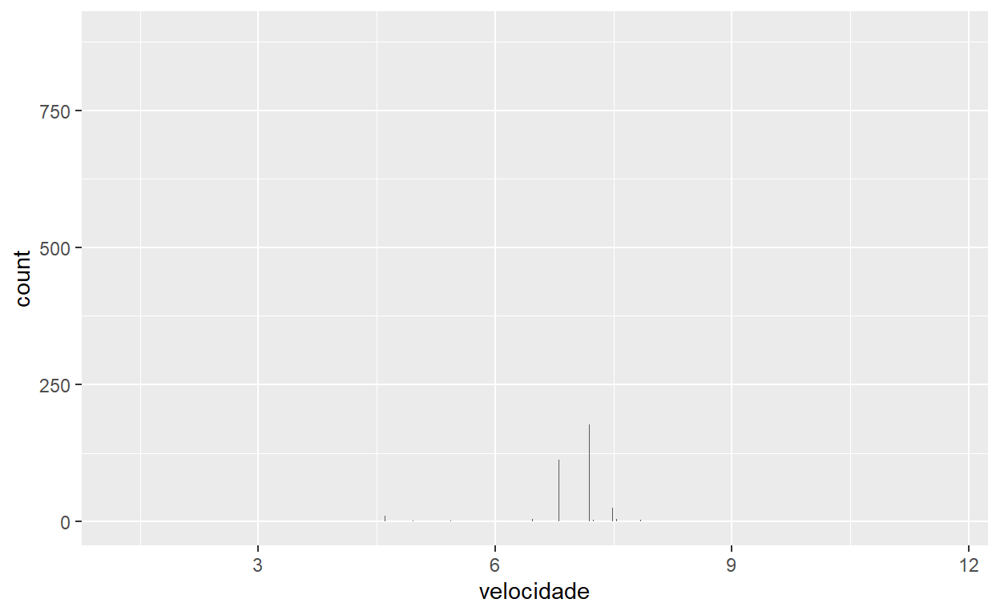
Este gr치fico est치 quase em branco, por qu칡? Tentamos representar uma vari치vel cont칤nua (velocidade) com uma geometria constru칤da para vari치veis discretas (geom_bar). Como cada valor de velocidade 칠 quase 칰nico, existe uma barra (min칰scula) para cada indiv칤duo e o gr치fico n칚o faz sentido. Precisamos mudar o geometria: o equivalente de um gr치fico de barras para vari치veis 칰nicas cont칤nuas 칠 uma histograma que agrega os valores em grupos (barras), ent칚o usamos geom_histogram.
flights %>%
ggplot() +
geom_histogram(aes(x=velocidade))
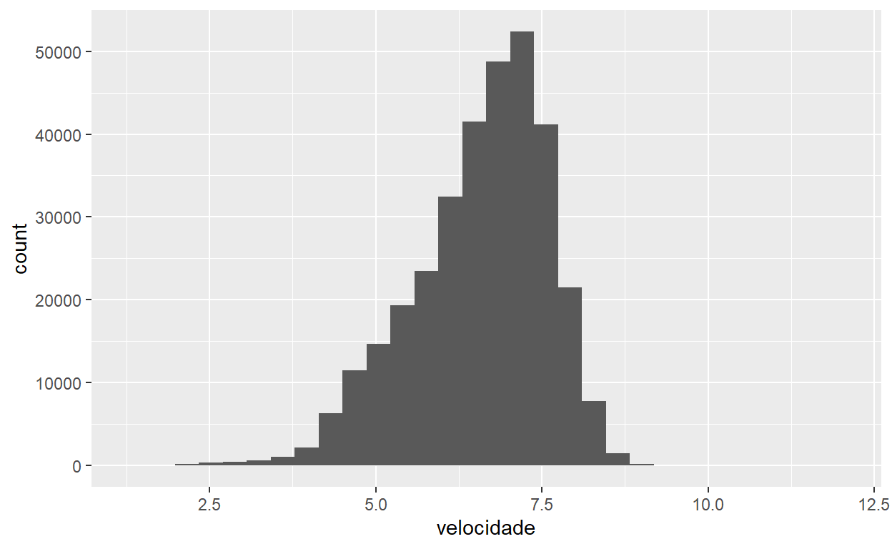
Faz mais sentido? Espero que sim. Compare os dois c칩digos dos gr치ficos acima com calma e compreenda as diferen칞as. Note que 칠 o tipo de vari치vel que demanda a geometria a ser escolhida, e n칚o o contr치rio.
Par칙metros fixos
As geometrias, cada uma com sua utilidade, tamb칠m t칡m par칙metros que podem ser alterados. Por exemplo, as barras do histograma que acabamos de produzir tem uma largura fixa. Vamos aumentar sua largura - o binwidth - ou seja, vamos representar mais valores do eixo 랒 em cada barra do histograma:
flights %>%
ggplot() +
geom_histogram(aes(x=velocidade), binwidth=1)
Uma observa칞칚o importante aqui: o binwidth 칠 especificado fora do aes(). Por qu칡? Porque existe uma regra importante no ggplot: par칙metros que variem dependendo de nossos dados devem ficar dentro de aes(); par칙metros fixos que n칚o dependam de nossos dados devem ficar fora do aes(). Ent칚o, em nosso c칩digo, temos dentro de aes() uma vari치vel, velocidade, e fora de aes() um n칰mero fixo independente dos dados, 1.
O gr치fico est치 muito cinza. Se quisermos mudar algumas cores, onde vamos especificar novos par칙metros de cores? Enquanto as cores s칚o fixas para todo o gr치fico e n칚o dependem de nossos dados, inserimos o par칙metro fora de aes(). O par칙metro de fill especifica o preenchimento da barra, e o colour a borda. Pode usar nomes de cores simples em ingl칡s (vamos ver outras op칞칫es em breve).
flights %>%
ggplot() +
geom_histogram(aes(x=velocidade), binwidth=1, colour="black", fill="orange")
Melhor, n칚o? Em geral, os argumentos 띾olour e 랁ill servem as v치rias geometrias.
Curiosidade: R aceita as duas grafias em ingl칡s para a palavra cor, 띾olour (brit칙nico, e obviamente o mais correto e bonito!) e 띾olor (americano).
Gr치ficos com uma vari치vel cont칤nua - Gr치ficos de densidade
Uma alternativa mais elegante ao histograma s칚o os gr치ficos de densidade. Vamos, assim, apenas alterar a geometria para a mesma vari치vel, velocidade, e observar novamente sua distribui칞칚o. A li칞칚o 칠 que, embora a geometria deva corresponder ao tipo de dados, existem v치rias geometrias que podem funcionar para um tipo de dado espec칤fico (histograma ou densidade, por exemplo).
flights %>%
ggplot() +
geom_density(aes(x=velocidade))
Lindo, mas ainda cinza demais. Vamos adicionar cor borda:
flights %>%
ggplot() +
geom_density(aes(x=velocidade), colour="blue")
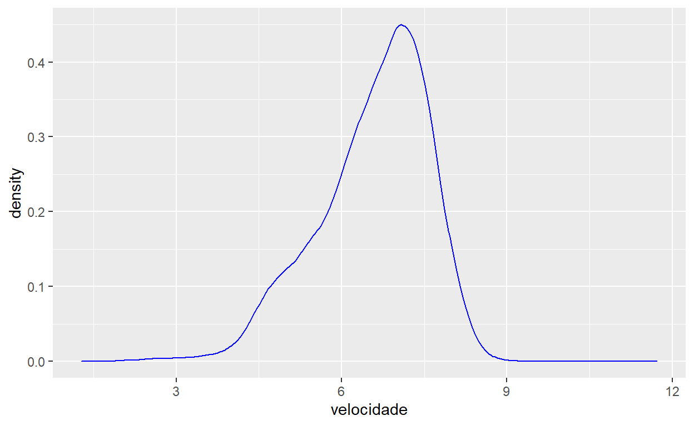
Melhor (melhor?), mas ainda muito branco. Vamos adicionar cor ao interior da curva:
flights %>%
ggplot() +
geom_density(aes(x=velocidade), colour="blue", fill="blue")
Muito pior. E se deix치ssemos a curva mais 랎ransparente com o par칙metro alpha?
flights %>%
ggplot() +
geom_density(aes(x=velocidade), colour="blue", fill="blue", alpha=0.2)
Agora sim melhorou. Mas nos falta uma refer칡ncia para facilitar a leitura do gr치fico. Por exemplo, seria legal adicionar uma linha vertical que indicasse onde est치 a m칠dia da distribui칞칚o. Vamos calcular a m칠dia da renda usando as nossas habilidades do tutorial de resumos estat칤sticos, e com a ajuda de pull para transformar o resultado de um tibble para um valor 칰nico:
Mas estamos tratando de curvas de densidade, n칚o estamos? Nessa geometria n칚o h치 possibilidade de representar valores com uma linha vertical. Vamos, ent칚o, adicionar uma nova camada e uma nova geometria, com uma est칠tica pr칩pria, xintercept, que aceita a localiza칞칚o de uma linha vertical, e com novos dados (no caso, um valor 칰nico), ao gr치fico que j치 hav칤amos constru칤do:
flights %>%
ggplot() +
geom_density(aes(x=velocidade), colour="blue", fill="blue", alpha=0.2) +
geom_vline(aes(xintercept = media_velocidade))
Veja que, com ggplot, podemos adicionar novas geometrias e dados sempre que precisarmos. Agora, temos duas camadas e duas geometrias.
Para tornar o gr치fico mais interessante, vamos alterar a forma e a cor da linha adicionada no gr치fico anterior:
flights %>%
ggplot() +
geom_density(aes(x=velocidade), colour="blue", fill="blue", alpha=0.2) +
geom_vline(aes(xintercept = media_velocidade), linetype="dashed", colour="red")
Exerc칤cio 1: Gr치ficos de uma Vari치vel
- Prepare um gr치fico de barras mostrando o n칰mero de voos por m칡s.
- Prepare um gr치fico de barras mostrando o n칰mero de voos por companhia a칠rea (
carrier) para o aeroporto de origem JFK.
- Prepare um histograma mostrando a distribui칞칚o do n칰mero de voos por hora de partida (
dep_time) para voos entre EWR e SFO (San Francisco).
- Prepare um gr치fico de densidade mostrando a distribui칞칚o de dura칞칚o (
air_time) para voos entre JFK e LAX (Los Angeles).
Gr치ficos com uma vari치vel cont칤nua e uma vari치vel discreta
Vamos dar alguns passos para tr치s e retornar aos histogramas. Lembre-se que est치vamos visualizando a distribui칞칚o de uma vari치vel cont칤nua. E se quisermos comparar a vari치vel cont칤nua entre subgrupos dos nossos dados? Por exemplo, visualizar o hor치rio de partida, dep_time, por aeroporto de origem, origin? Precisamos filtrar os dados e fazer um gr치fico separado para cada aeroporto?
Poder칤amos. Mas mais interessante 칠 comparar as distribui칞칫es em um mesmo gr치fico. Para fazer isso, precisamos saber como visualizar duas vari치veis do nosso tibble ao mesmo tempo. Como estamos separando uma distribui칞칚o de uma vari치vel cont칤nua (dep_time) em tr칡s, a partir de uma segunda vari치vel discreta (origin), precisamos adicionar essa nova vari치vel 라esthetics (aes). Veja como:
flights %>%
ggplot() +
geom_histogram(aes(x=dep_time, fill=origin))
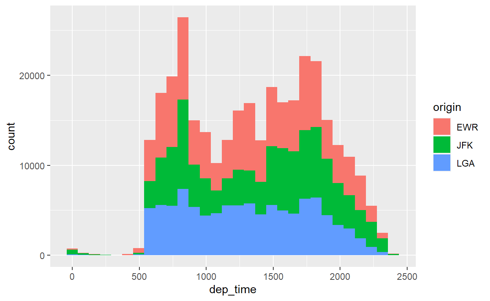
Observe que adicionamos o par칙metro 랁ill 라esthetics (dentro do aes() porque ele depende de nossos dados). Isso significa que a vari치vel origin separar치 as distribui칞칫es de velocidade em cores de preenchimento diferentes. Conseguem ver as tr칡s distribui칞칫es, uma acima da outra? Note que agora temos uma legenda.
A sobreposi칞칚o dos dois histogramas dificulta a visualiza칞칚o de todos os dados. Podemos ajustar como os dois conjuntos de dados s칚o exibidos um em cima do outro com o argumento 딿osition. Por exemplo, com position="dodge" podemos organizar os dados lado a lado:
flights %>%
ggplot() +
geom_histogram(aes(x=dep_time, fill=origin),
position = "dodge", binwidth=200)
Melhor? N칚o sei, depende das suas prefer칡ncias.
Vamos tentar algo semelhante com as curvas de densidade. Em vez de 랁ill, vamos usar a vari치vel origin no par칙metro colour dentro de aes e separar as distribui칞칫es por cores de borda:
flights %>%
ggplot() +
geom_density(aes(x=dep_time, colour=origin))
Agora sim est치 melhor. Vamos adicionar o mesmo com 랁ill:
flights %>%
ggplot() +
geom_density(aes(x=dep_time, fill=origin))
N칚o ficou muito bom. Mas pode melhorar. Com o par칙metro 라lpha, podemos deixar as distribui칞칫es mais 랎ransparentes e observar as 치reas nas quais se sobrep칫e:
flights %>%
ggplot() +
geom_density(aes(x=dep_time, fill=origin), alpha=0.5)
Finalmente, podemos usar 랁ill e 띾olour juntos na 라esthetics
flights %>%
ggplot() +
geom_density(aes(x=dep_time, colour=origin, fill=origin), alpha=0.5)
Que belezura de gr치fico! A compara칞칚o de distribui칞칫es de uma vari치vel cont칤nua por uma vari치vel discreta 칠 uma das mais 칰teis em ci칡ncia, pois 칠 exatamente a forma gr치fica dos testes de hip칩teses cl치ssico quando temos dois grupos.
Gr치ficos com uma vari치vel cont칤nua e uma vari치vel discreta - Gr치ficos de boxplot
Vamos repetir o gr치fico acima, mas, em vez de descrever a distribui칞칚o da vari치vel cont칤nua ao longo de eixo x em termos da sua densidade, vamos descrever ela ao longo do eixo y com um boxplot que resume as estat칤sticas importantes da distribui칞칚o. O boxplot mostra a mediana no meio da caixa, o primeiro e terceiro quartis nos limites da caixa, e \(1.5*IQR\) (IQR 칠 a diferen칞a entre o terceiro e primeiro quartil) al칠m da caixa com as linhas (whiskers).
flights %>%
ggplot() +
geom_boxplot(aes(x=origin, y=dep_time))

Gr치ficos com um valor 칰nico por uma vari치vel discreta - Gr치ficos de coluna
Os gr치ficos de histograma, densidade e boxplot geram gr치ficos baseado na distribui칞칚o de m칰ltiplas observa칞칫es por categoria discreta. Quando temos apenas um valor 칰nico por categoria discreta, usamos um gr치fico de coluna. Normalmente isso exige o uso de group_by e summarize para mudar o tamanho de nosso banco de dados e a unidade de an치lise para ter uma linha por grupo.
Sempre temos que pensar no tibble que estamos encaminhando para o ggplot. O tibble de flights 칠 uma tabela de todos os voos e n칚o ser치 apropriado para mostrar um valor por aeroporto - temos milhares de observa칞칫es por aeroporto! Ent칚o a prepara칞칚o de dados tem que produzir um tibble apropriado antes da visualiza칞칚o:
flights %>% group_by(origin) %>%
summarize(dep_delay_media=mean(dep_delay,na.rm=T)) %>%
ggplot() +
geom_col(aes(x=origin, y=dep_delay_media))
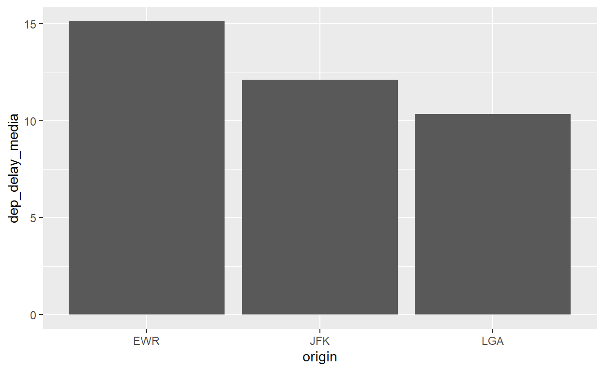
Gr치ficos de duas vari치veis cont칤nuas
At칠 agora trabalhamos com distribui칞칫es de uma 칰nica vari치vel ou com a distribui칞칚o conjunta de uma vari치vel cont칤nua por outra discreta (em outras palavras, separando a distribui칞칚o de uma vari치vel em v치rias a partir de uma vari치vel categ칩rica).
Vamos ver agora como relacionar graficamente duas vari치veis cont칤nuas. O padr칚o 칠 usarmos a geometria de gr치fico de dispers칚o, que apresenta cada par de informa칞칫es como uma coordenada no espa칞o bidimensional. Vamos ver um exemplo com distance (eixo horizontal) e air_time (eixo vertical) usando a geometria geom_point:
(Note: Caso o seu computador seja lento, voc칡 pode pegar uma amostra aleat칩ria de ex. 1000 linhas do banco de dados flights com sample_n(1000) antes de rodar os gr치ficos abaixo.)
Voc칡 consegue ler este gr치fico? Cada ponto representa um voo, ou seja, posiciona no espa칞o o par (distance, air_time) daquele voo. Naturalmente, h치 uma certa tend칡ncia nos dados: os voos mais distantes duram mais tempo.
Para personalizar o gr치fico, podemos ajustar o cor dos pontos, o tamanho deles, e a forma deles:
Sempre temos que experimentar v치rias vezes para achar uma formata칞칚o apropriada. A forma (shape) 칠 um n칰mero que corresponde aos c칩digos oficiais - pode ver a lista deles na segunda p치gina do cheatsheet do ggplot2, por exemplo.
Uma geometria suplementar com duas vari치veis cont칤nuas resume a rela칞칚o entre as duas vari치veis com modelos lineares e n칚o lineares. A geometria geom_smooth cumpre esse papel.
Para utiliz치-la, precisamos definir qual 칠 o m칠todo (par칙metro 랈ethod) de modelar os dados. O mais convencional 칠 representar a rela칞칚o entre as vari치veis como reta: um 딻inear model que 칠 representado por 딻m. Veja o exemplo (ignore o par칙metro 랍e por enquanto):
flights %>% sample_n(1000) %>%
ggplot() +
geom_point(aes(x = distance, y =air_time), size=0.1) +
geom_smooth(aes(x = distance, y = air_time), method = "lm", se = FALSE)
Legal, n칚o? Se retirarmos o par칙metro 랍e (standard error), ou voltarmos seu valor para o padr칚o TRUE, obteremos tamb칠m o intervalo de confian칞a (95%) da reta que inserimos. (Diminuimos o n aqui para tornar o intervalo de confian칞a em cinza mais vis칤vel).
flights %>% sample_n(50) %>%
ggplot() +
geom_point(aes(x = distance, y = air_time), size=0.1) +
geom_smooth(aes(x = distance, y = air_time), method = "lm")
A alternativa n칚o linear para representar a tend칡ncia dos dados mais utilizada com essa geometria 칠 o m칠todo 랇oess (local weighted regression). Veja o resultado, que n칚o varia muito aqui devido a tend칡ncia bem linear nos dados:
flights %>% sample_n(1000) %>% ggplot() +
geom_point(aes(x = distance, y = air_time), size=0.1) +
geom_smooth(aes(x = distance, y = air_time), method = "loess")
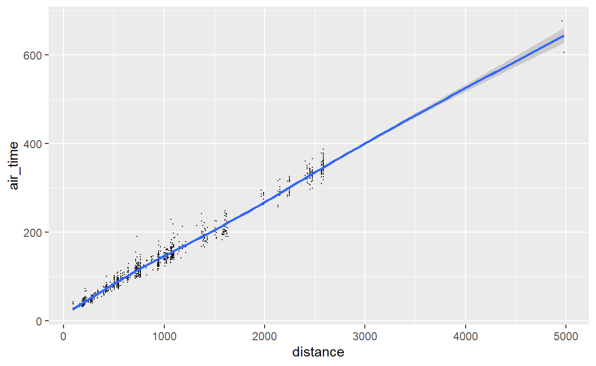
Exerc칤cio 2: Gr치ficos de duas Vari치veis
- Prepare um gr치fico de densidade mostrando a distribui칞칚o da hora de partida de voos entre EWR e BOS (Boston) por companhia a칠rea (
carrier).
- Prepare um gr치fico de colunas/barras (
geom_col) mostrando a dura칞칚o m칠dia (air_time) de voos de cada companhia a칠rea.
- Prepare um gr치fico de pontos mostrando a rela칞칚o entre o atraso na partida (
dep_delay) e o atraso na chegada (arr_delay) para os voos de JFK a MIA (Miama).
- Prepare um gr치fico de pontos mostrando a rela칞칚o entre a dura칞칚o (
air_time) m칠dia e o atraso m칠dia (dep_delay) de cada companhia a칠rea.
- Adicione uma linha de tend칡ncia/regress칚o linear no gr치fico da quest칚o 4.
Gr치ficos de tr칡s ou mais vari치veis
Em geral, estamos limitados por papel e telas bidimensionais para exibir apenas geometrias de duas vari치veis. Mas existe um truque que podemos usar para mostrar mais informa칞칫es: incluir os outros par칙metros de uma geometria, tais como cores, tamanhos e formas, dentro de aes segundo uma terceira vari치vel em seu tibble.
Se, por exemplo, queremos representar uma terceira vari치vel cont칤nua, podemos coloc치-la como o tamanho dos pontos (raio do c칤rculo). Por exemplo, num gr치fico comparando o dep_time e dep_delay dos voos, podemos definir o tamanho dos pontos proporcionalmente dist칙ncia de cada voo:
flights %>% sample_n(1000) %>% ggplot() +
geom_point(aes(x = dep_time, y = dep_delay, size=distance))
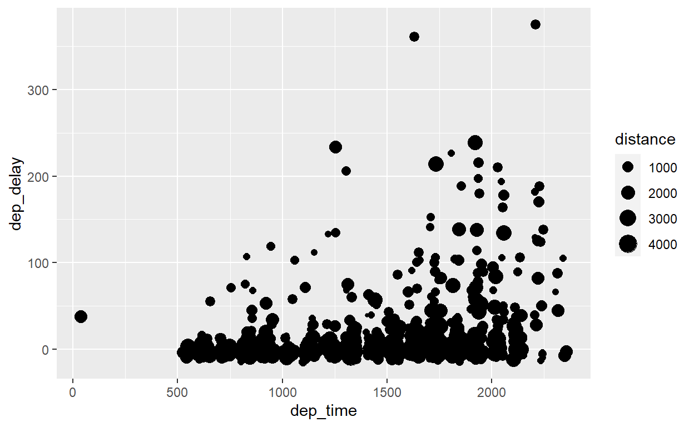
Se, em vez de alterar o tamanho dos pontos por uma vari치vel num칠rica, quisermos alterar sua cor ou a forma dos pontos com base em uma vari치vel categ칩rica (aeroporto de origem, por exemplo), fazemos, respectivamente:
flights %>% sample_n(1000) %>% ggplot() +
geom_point(aes(x = dep_time, y = dep_delay, colour=origin))
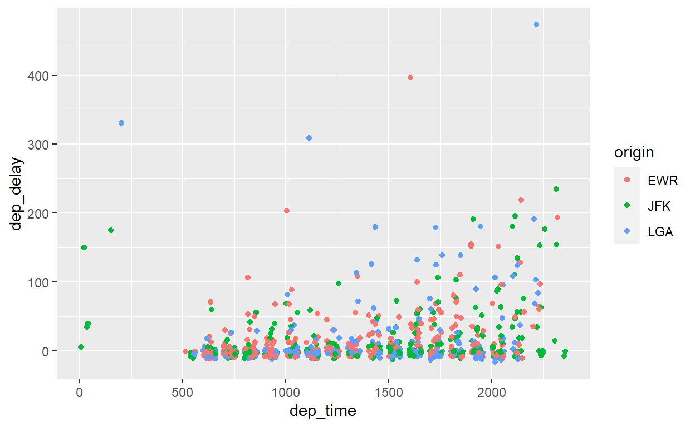
Ou:
flights %>% sample_n(1000) %>% ggplot() +
geom_point(aes(x = dep_time, y = dep_delay, shape=origin))
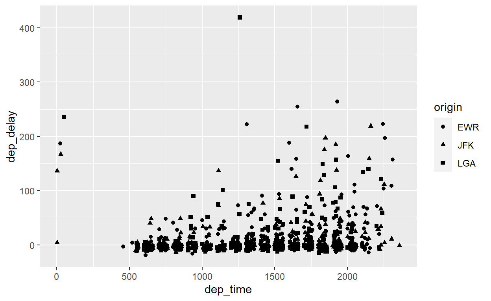
M칰ltiplos Gr치ficos (facet_grid)
Existe mais um jeito de mostrar mais de duas vari치veis - podemos criar v치rios gr치ficos organizados em uma grade sem ter que repetir nosso c칩digo toda vez. Como fazer isso? Adicionando um 딵acet no final do nosso fluxo de prepara칞칚o do gr치fico. O mais 칰til 칠 facet_grid(), que adicionamos como qualquer outra camada. Dentro de facet_grid() podemos definir a vari치vel discreta com que queremos separar os nossos dados e mostrar gr치ficos distintos. Especificamente, se quisermos que a divis칚o seja horizontal baseado na coluna categ칩rica vari치vel, usamos facet_grid(rows=vars(vari치vel)), e se quisermos que a divis칚o seja vertical, usamos facet_grid(cols=vars(vari치vel)). (O vars() aqui permite que separamos os gr치ficos por mais que uma vari치vel se necess치rio).
Veja um exemplo:
flights %>% sample_n(1000) %>%
ggplot() +
geom_point(aes(x = dep_time, y = dep_delay)) +
facet_grid(cols=vars(origin))
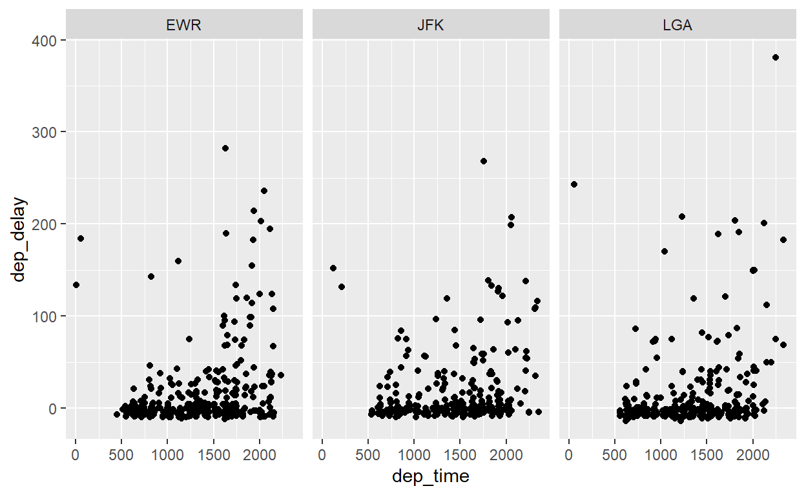
Ou, organizado verticalmente:
flights %>% sample_n(1000) %>%
ggplot() +
geom_point(aes(x = dep_time, y = dep_delay)) +
facet_grid(rows=vars(origin))
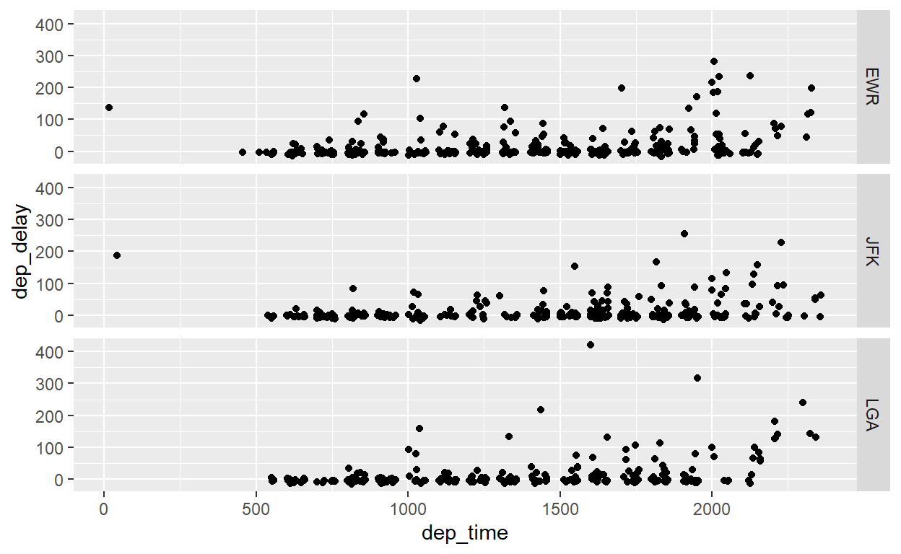
Para separar gr치ficos em uma grade, com uma vari치vel horizontalmente e outra verticalmente, 칠 s칩 especificar ambos rows e cols.
flights %>% sample_n(1000) %>%
ggplot() +
geom_point(aes(x = dep_time, y = dep_delay)) +
facet_grid(rows=vars(month), cols=vars(origin))
O que mostra este gr치fico? Cada elemento 칠 um aeroporto de origem em um m칡s, e mostra a rela칞칚o entre hor치rio de partida e atraso neste m칡s e aeroporto.
Gr치ficos de Linha
Gr치ficos de linha exigem, em geral, um pouco mais de prepara칞칚o de nossos dados. A vari치vel x pode ser discreta ou cont칤nua, mas precisa ser ordenada para que as linhas fa칞am sentido. Precisamos organizar o tibble fora do ggplot e coloc치-lo antes no pipe.
Para criar um gr치fico de linha vamos usar month (m칡s) como nossa vari치vel ordenada e, portanto, precisamos resumir os dados por month. Vamos analisar o atraso m칠dia por m칡s. O primeiro passo 칠 transformar a vari치vel month em um factor ordenado. Em seguida, vamos calcular o atraso m칠dio por m칡s.
Veja a tabela que queremos produzir antes de visualizar:
E agora que temos os nossos dados na estrutura apropriada, com a unidade de an치lise o m칡s e a vari치vel de atraso m칠dio dispon칤vel, podemos encaminhar os dados ao gr치fico de linha, geom_line. geom_line exige um x, um y, e um group, este 칰ltimo para definir como juntar os pontos ao longo do tempo - neste exemplo temos apenas um grupo/uma linha ent칚o podemos deixar group=1.
flights %>%
mutate(month=factor(month, levels=1:12, ordered=TRUE)) %>%
group_by(month) %>%
summarize(dep_delay_media=mean(dep_delay,na.rm=T)) %>%
ggplot() +
geom_line(aes(x=month, y=dep_delay_media), group=1)
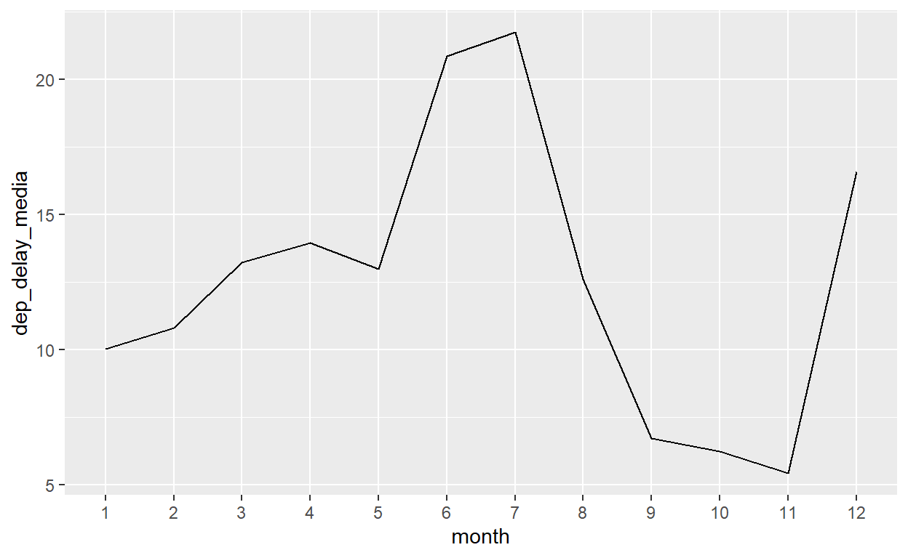
O que podemos fazer se quisermos uma linha separada para cada aeroporto de origem? Como sempre, primeiramente temos que preparar os dados na forma apropriada, agrupando por origin tamb칠m no resumo de dados, e depois definir group=origin dentro de geom_line (e dentro de aes).
N칚o temos jeito de distinguir as linhas aqui ent칚o 칠 necess치rio tamb칠m definir o colour da linha:
Perfeito!
Os gr치ficos de linha podem ser um pouco confusos no come칞o, ent칚o 칠 legal ver como fica a estrutura da tabela que 칠 criada antes do gr치fico. Voc칡 imaginou como 칠 a tabela do 칰ltimo gr치fico?
Gr치ficos de barras 100%
Podemos aproveitar o mesmo tipo de estrutura da tabela que criamos para o gr치fico de linhas para criar gr치ficos de barras 100%. Esse tipo de gr치fico 칠 칰til para entender a participa칞칚o de cada grupo no total. Por exemplo, vamos calcular a contribui칞칚o de cada aeroporto ao atraso total em cada m칡s. Depois, 칠 s칩 trocar geom_line para geom_col e ajustar as est칠ticas apropriadas. Especificamente, geom_col permite o argumento position (que j치 usamos com geom_histogram acima) para comparar as barras relativamente, em porcentagens, quando position="fill":
flights %>%
mutate(month=factor(month, levels=1:12, ordered=TRUE)) %>%
group_by(month, origin) %>%
summarize(dep_delay_total=sum(dep_delay,na.rm=T)) %>%
ggplot() +
geom_col(aes(x=month, y=dep_delay_total, fill=origin), position = "fill")
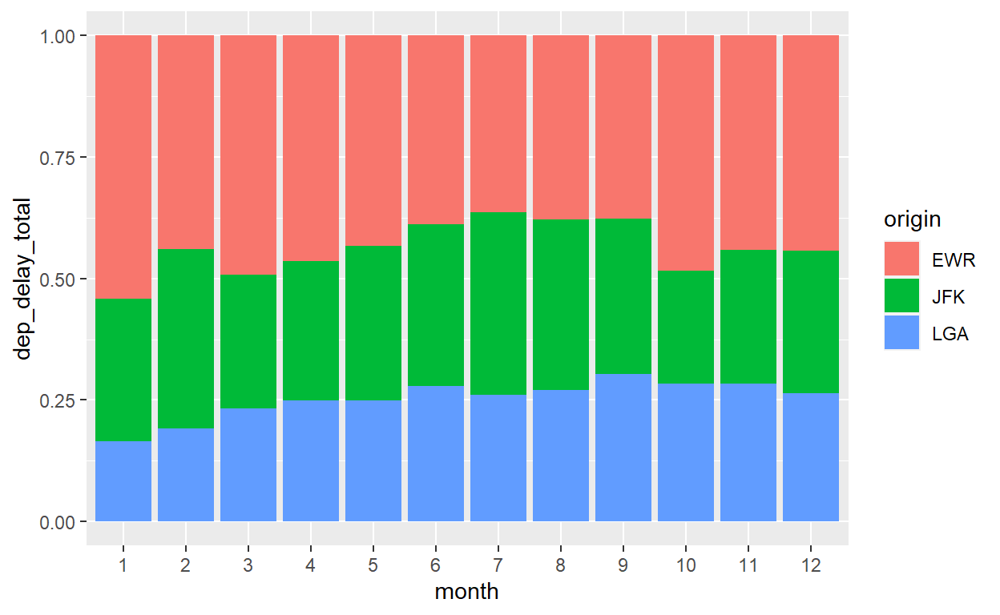
Mais geometrias
Existe uma variedade de geometrias que podemos usar como camadas para visualizar os nossos dados.
Uma geometria muito 칰til 칠 geom_text, que coloca como formas geom칠tricas os textos mesmos. Por exemplo, n칩s podemos especificar um gr치fico de dispers칚o onde os pontos refletem o nome do destino do voo, usando o par칙metro 딻abel.
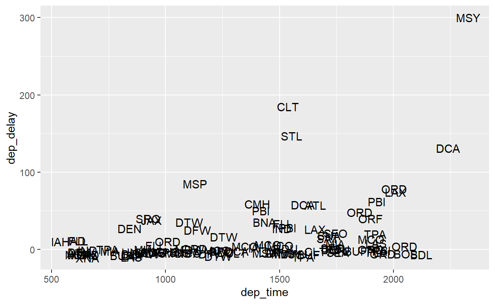
Outra geometria 칰til 칠 geom_tile que tem uma forte conex칚o com mapas raster que discutiremos mais adiante no curso. Especificamos vari치veis x e y, e tamb칠m uma vari치vel de 딵ill que se aplica a cada c칠lula de interse칞칚o de x e y. Por exemplo, podemos avaliar o atraso m칠dio por aeroporto e m칡s.
Evite voar de JFK em julho!
Finalmente, vamos ver como gerar um gr치fico de pizza. A primeira observa칞칚o 칠 que um gr치fico de pizza cont칠m os mesmos dados que um gr치fico de barras 100% (de porcentagem). Ent칚o a primeira tarefa 칠 gerar a tabela apropriada para este tipo de gr치fico. Precisamos de um geom_col, com position="fill" para garantir que os valores somam 100%, e vamos deixar a est칠tica x em branco porque queremos apenas uma barra.
Veja o resultado. Com um pouco de imagina칞칚o, podemos interpretar esse resultado como um gr치fico de pizza, onde cada 딵atia colorida da barra equivale a uma 딵atia de pizza. Para transformar o nosso gr치fico em um c칤rculo, precisamos entender mais um elemento da gram치tica de gr치ficos. Al칠m de geometrias e est칠ticas, existem sistemas de coordenados. Normalmente, eles s칚o invis칤veis e n칚o precisamos especificar nada porque as coordenadas s칚o 칩bvias - uma grade definida horizontalmente por x e verticalmente por y, como usamos em todos os outros gr치ficos do tutorial atual. Mas existem outros sistemas de coordenadas, por exemplo o sistema de coordenadas 딿olares, que divide a tela/papel em graus de um c칤rculo. Se definirmos um sistema de coordenadas polares adicionando mais uma camada coord_polar(), e definimos o 치ngulo theta de cada fatia baseado na vari치vel y (dep_delay), com coord_polar(theta="y"), geramos um gr치fico de pizza:
Mais uma linha e recebemos um gr치fico completamente diferente visualmente, mas apresentando os mesmos dados.
Controlando cores com 땁cales
as partes mais envolventes dos gr치ficos s칚o as cores. Mas tamb칠m s칚o as partes mais complexas. Temos que identificar exatamente qual parte do gr치fico deve ser representado com qual cor, e especificar isso em termos sistem치ticos. O mapeamento entre valores das nossas vari치veis e cores espec칤ficas 칠 feito em ggplot por scales (escalas). Scales s칚o definidos em mais uma camada do nosso gr치fico.
Precisamos tomar muito cuidado com o tipo de scale, que precisa corresponder ao tipo da nossa vari치vel e tamb칠m se estamos colorindo um ponto/linha (딲olour) ou preenchendo uma 치rea (딵ill). Sempre use a tabela abaixo como guia:
| Tipo de vari치vel | Color (ponto, linha) | Fill (치rea) |
|---|---|---|
| Cont칤nuo | scale_color_gradient(low="cor1",high="cor2") |
scale_fill_gradient(low="cor1",high="cor2") |
| Discreto | scale_color_brewer(palette="pre-definido") |
scale_fill_brewer(palette="pre-definido") |
Um pouco complexo, sim, mas capaz de fornecer muita flexibilidade. Quais s칚o as cores cor1 e cor2 nos exemplos acima? Podemos usar v치rios sistemas de refer칡ncia de cores: nomes (딱lue), rgb (3, 78, 252), hex (#034efc) etc. Todos funcionam.
O problema 칠 que n칚o somos designers, e temos a tend칡ncia de escolher cores feias (eu escolho pelo menos). 칄 melhor consultar a guia no site Color Brewer e copiar-colar os c칩digos das cores desejadas.
Vamos para um exemplo. Primeiro, de uma vari치vel cont칤nua (dep_time) e uma est칠tica de colour (de pontos). Lembre-se que os pontos ainda exigem uma posi칞칚o ent칚o tamb칠m precisamos definir o x e y. As cores padr칚o do ggplot aparecem assim:
flights %>% sample_n(1000) %>% ggplot() +
geom_point(aes(x = distance, y = air_time, color=dep_time))
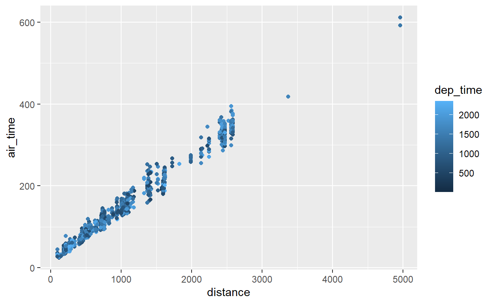
Vamos adicionar uma escala personalizada agora, usando cores de uma escala verde de Color Brewer:
flights %>% sample_n(1000) %>% ggplot() +
geom_point(aes(x = distance, y = air_time, color=dep_time)) +
scale_color_gradient(low="#f7fcfd", high="#238b45")
Entre as duas cores extremas, o R preenche uma escala cont칤nua automaticamente. Bonito e simples!
Com vari치veis discretas, 칠 mais dif칤cil porque temos que especificar uma cor distinta para cada categoria poss칤vel. Uma alternativa 칠 aproveitar uma 딿aleta pr칠-definida por especialistas. Por exemplo, para definir cores dos pontos para cada aeroporto podemos usar a paleta Set2 (encontrada na op칞칚o 땀ualitative de Color Brewer):
flights %>% sample_n(1000) %>% ggplot() +
geom_point(aes(x = distance, y = air_time, color=origin)) +
scale_color_brewer(palette="Set2")
Temos mais duas possibilidades para completar a tabela de escalas. Agora, com uma vari치vel cont칤nua e o par칙metro fill para colorir uma 치rea:
Finalmente, vamos construir um exemplo com uma vari치vel discreta (a companhia dominante em cada m칡s e aeroporto de origem) e o preenchimento de 치rea:
Personaliza칞칚o de Gr치ficos al칠m de geometria
Finalmente, podemos alterar diversos aspectos do nosso gr치fico n칚o relacionados aos dados, geometria ou est칠ticas. O procedimento para adicionar altera칞칫es em t칤tulo, eixos, legenda, etc, 칠 o mesmo que adicionando novas geometrias/camadas.
Em primeiro lugar, vamos adicionar um t칤tulo ao gr치fico:
flights %>% sample_n(1000) %>% ggplot() +
geom_point(aes(x = distance, y = air_time, color=origin)) +
ggtitle("Rela칞칚o entre dist칙ncia e dura칞칚o de voo, por aeroporto de Nova I칩rque")
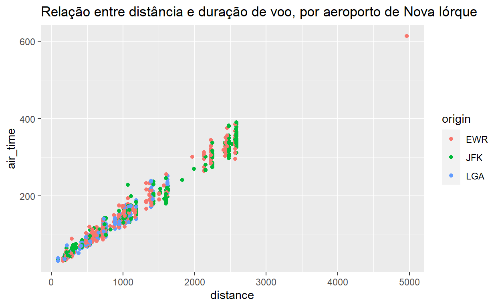
A seguir, vamos modificar os nomes dos r칩tulos dos eixos, com xlab() e ylab(). Por padr칚o o R utiliza os nomes das vari치veis, mas obviamente isso nem sempre 칠 claro ou apropriado para o gr치fico final:
O posicionamento da legenda pode ser modificado:
O nome da legenda precisa ser especificada na camada da escala de cores:
flights %>% sample_n(1000) %>% ggplot() +
geom_point(aes(x = distance, y = air_time, color=origin)) +
ggtitle("Rela칞칚o entre dist칙ncia e dura칞칚o de voo, por aeroporto do Nova Iorque") +
xlab("Dist칙ncia") +
ylab("Dura칞칚o") +
theme(legend.position="bottom") +
scale_color_brewer(palette="Set2", name="Aeroporto")
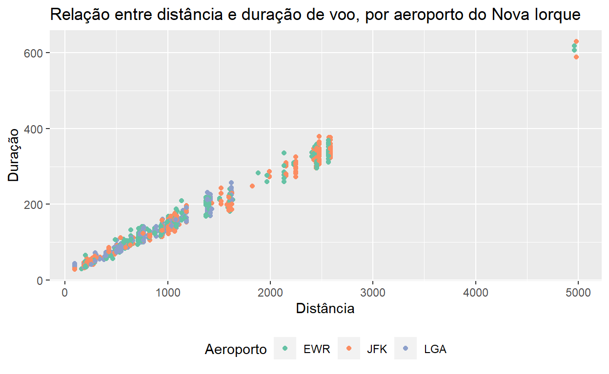
Com esfor칞o, literalmente todos os elementos podem ser modificados, por exemplo o tamanho do texto nos eixos:
flights %>% sample_n(1000) %>% ggplot() +
geom_point(aes(x = distance, y = air_time, color=origin)) +
ggtitle("Rela칞칚o entre dist칙ncia e dura칞칚o de voo, por aeroporto do Nova Iorque") +
xlab("Dist칙ncia") +
ylab("Dura칞칚o") +
theme(axis.text.x = element_text(size=4),
axis.text.y = element_text(size=4),
axis.title.x = element_text(size=4),
axis.title.y = element_text(size=4))
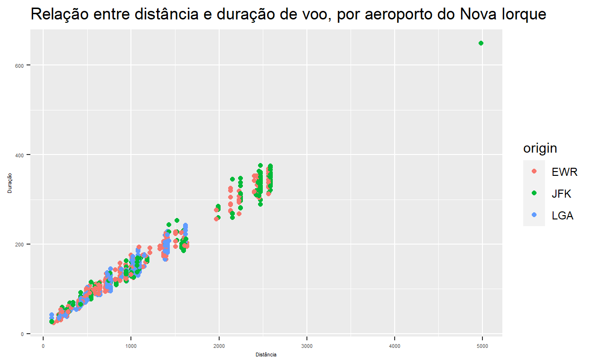
O ggplot nos permite modificar basicamente todos os elementos de estilo do nosso gr치fico mas, 맙 vezes, s칚o muitos detalhes. Para alterar o estilo do nosso gr치fico, 칠 mais f치cil usar um tema (theme) pr칠-definido. Por exemplo, podemos usar theme_classic() para tirar o preenchimento e a grade do fundo.
flights %>% sample_n(1000) %>% ggplot() +
geom_point(aes(x = distance, y = air_time, color=origin)) +
ggtitle("Rela칞칚o entre dist칙ncia e dura칞칚o de voo, por aeroporto do Nova Iorque") +
xlab("Dist칙ncia") +
ylab("Dura칞칚o") +
theme_classic()
Os temas tamb칠m podem ser usados para replicar estilos de outras fontes profissionais atrav칠s, por exemplo, do pacote ggthemes. Abaixo criamos um gr치fico usando o estilo da revista The Economist em uma linha 칰nica de c칩digo.
Habilidade B치sica de Programa칞칚o: Salvando Gr치ficos
O fluxo de trabalho normal 칠 que o nosso gr치fico aparece no relat칩rio final no lugar em que digitamos o c칩digo no script. N칚o precisamos salvar o nosso gr치fico separadamente. Mas caso voc칡 queira salvar o seu gr치fico como um arquivo de imagem, voc칡 pode usar o ggsave() que salva o 칰ltimo gr치fico apresentado em R. O tipo de imagem 칠 definido com a extens칚o do arquivo (.png, .jpg, .pdf etc.).
O arquivo 딵lights_barplot.png ser치 salvo na pasta do seu projeto atual.
Gr치ficos interativos e anima칞칫es
Se voc칡 estiver trabalhando com um relat칩rio em HTML para um site online (e n칚o um PDF), talvez queira tornar seu gr치fico interativo para que os usu치rios possam explorar cada ponto de dados. Isso 칠 f치cil com o pacote plotly e o comando ggplotly. Gravamos nosso gr치fico na mesma sintaxe de ggplot como um objeto e, em seguida, usamos ggplotly.
#install.packages("plotly")
library(plotly)
graf_1 <- flights %>% sample_n(1000) %>% ggplot() +
geom_point(aes(x = distance, y = air_time, color=origin)) +
ggtitle("Rela칞칚o entre dist칙ncia e dura칞칚o de cada voo, por aeroporto do Nova Iorque em 2013") +
xlab("Dist칙ncia") +
ylab("Dura칞칚o") +
theme_classic()
graf_1 %>%
ggplotly()
Explore o gr치fico acima com cursor.
Este pacote tamb칠m ajuda a transformar gr치ficos em anima칞칫es. Podemos usar o mesmo fluxo de trabalho acima, e s칩 precisamos especificar o par칙metro 딵rame na geometria para a vari치vel que define cada momento em tempo da anima칞칚o. Para ilustrar, vamos analisar o mesmo gr치fico com uma anima칞칚o por m칡s. Toque 딿lay no gr치fico produzido pelo c칩digo abaixo para ver a anima칞칚o. Isto apenas funciona em relat칩rios de HTML.
Enfim, existem infinitas personaliza칞칫es poss칤veis. Ningu칠m consegue lembrar todos os detalhes ou o c칩digo. 칄 frequentemente necess치rio buscar online por ajuda ou ideias, por칠m pesquisar por 딶r치fico bonito n칚o ajuda nada. Temos que usar a linguagem e a gram치tica de gr치ficos para encontrar o que estamos procurando, ent칚o 칠 crucial entender o que significa uma geometria, uma est칠tica, uma escala, etc.
Em caso de d칰vida, pode consultar o cheatsheet aqui. Um outro ponto de refer칡ncia 칠 a lista de tipos de gr치ficos com exemplos aqui.
Exerc칤cio 3: Gr치ficos Avan칞ados
- Come칞ando com o mesmo gr치fico de Exerc칤cio 2.3, prepare o gr치fico de pontos mostrando a rela칞칚o entre o atraso na partida (
dep_delay) e o atraso na chegada (arr_delay) para os voos de JFK a MIA (Miami). Colora os pontos de acordo com a companhia a칠rea, e adicione t칤tulos bem formatados nos eixos e para o gr치fico inteiro.
- Ajuste o seu gr치fico de quest칚o 1 para que o cor do ponto reflete uma vari치vel cont칤nua, a hora de partida (
dep_time), usando uma escala de cores apropriada.
Mostrar C칩digo
flights %>%
filter(origin == "JFK" & dest == "MIA") %>%
ggplot() + geom_point(aes(x = dep_delay, y = arr_delay, colour = dep_time)) +
scale_colour_gradient(low = "#efedf5", high = "#4a1486", name = "Hor치rio") +
ggtitle("Atrasos nos voos de JFK para Miama") + xlab("Atraso na partida") +
ylab("Atraso na chegada")
- Prepare um gr치fico de linhas mostrando a dist칙ncia total de viagem de todos os voos por m칡s, com uma linha para cada aeroporto de origem. Aplique uma escala de cores apropriada.
Mostrar C칩digo
flights %>%
mutate(month = factor(month, 1:12, ordered = TRUE)) %>%
group_by(month, origin) %>%
summarize(distancia_total = sum(distance, na.rm = T)) %>%
ggplot() + geom_line(aes(x = month, y = distancia_total, group = origin,
colour = origin)) + scale_colour_brewer(palette = "Set2", name = "Aeroporto")
- Prepare v치rios gr치ficos de linha numa grade, cada um mostrando a rela칞칚o entre a hora de partida (
hour) e o atraso m칠dio de partida em um aeroporto de origem para uma companhia a칠rea.
Leitura para Tutorial 7
Antes da pr칩xima aula, por favor leia R 4 Data Science, Cap칤tulo 13